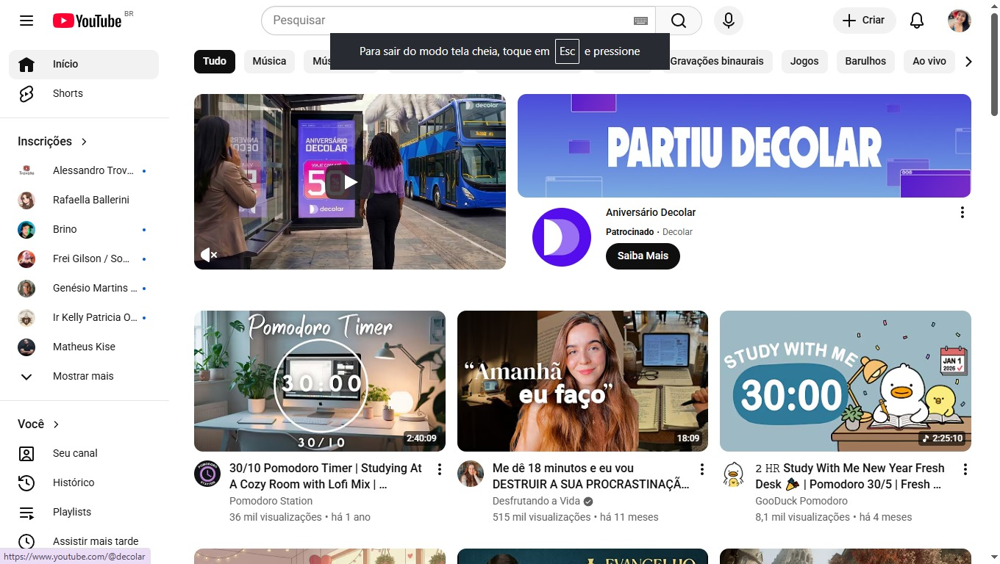
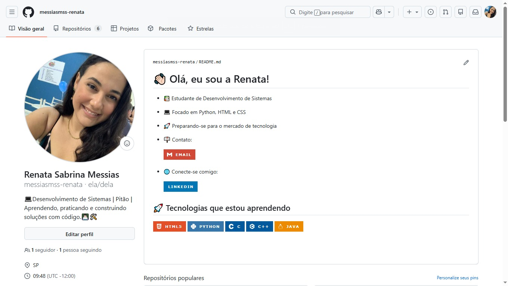
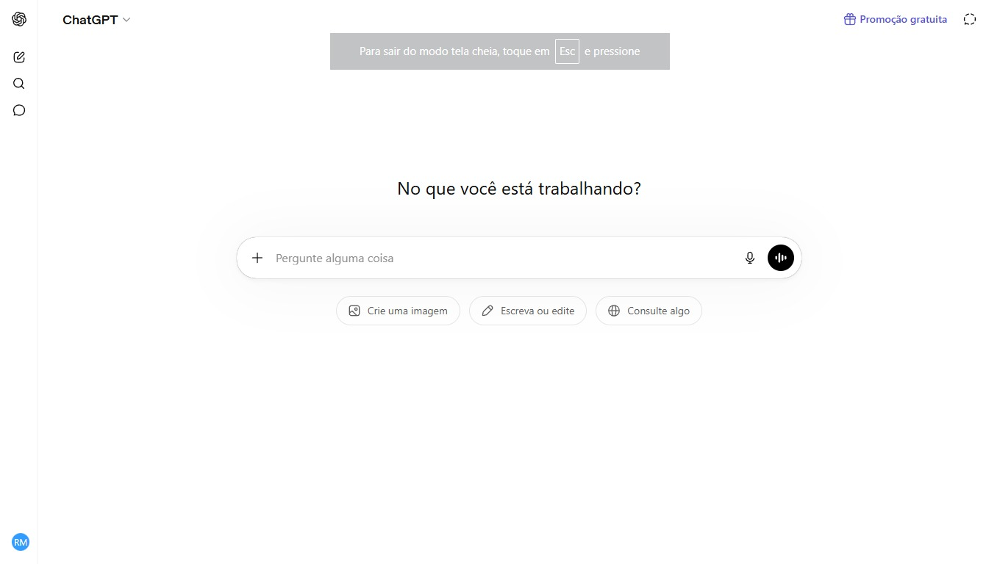
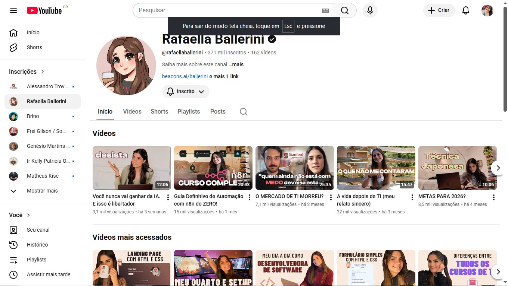
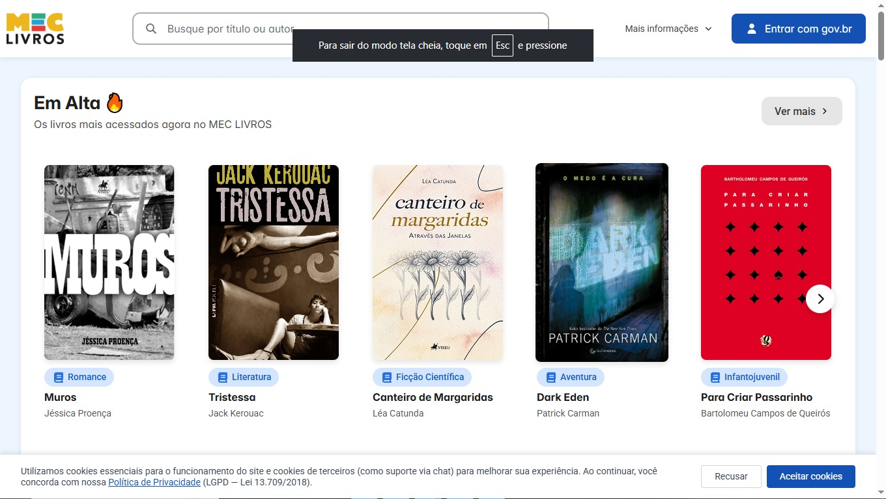

Uns dos sites mais ultilizados para ver videos de estudo, videos de lazer e ouvir musicas para estudar é Youtube:

YoutubeOutro site que eu uso muito durante os meus estudos do curso de ADS é o meu perfil no GitHub:

GitHubUns dos sites que mais uso para me ajudar nos estudos é o ChatGPT:

ChatGPTTem um canal no YouTube que eu gosto muito de assistir os videos para aprender e se atualizar sobre a area de tecnologia:

Canal Rafaella BalleriniE por ultimo na lista, está um site novo que eu gosto muito de usar para baixar livros é o Mec Livros, onde consigo baixar livros gratuitos:

Mec LivrosEssa foi á lista do meus 5 sites favoritos, espero que tenha gostado!